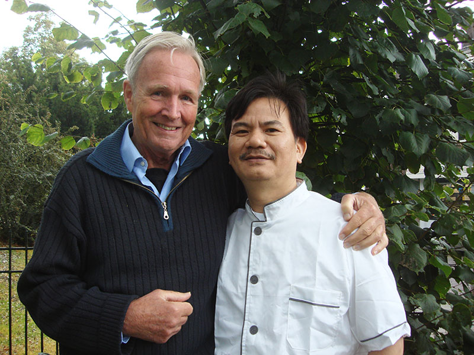

MIJN VRIEND
Nu kunt u in Nederland kennismaken met de originele en verfijnde gerechten uit Fujian.
Laat u verrassen door de smaak van de authentiek Chinese keuken. Chef-kok Xiang Wei Shi, geboren in Fuzhou, de hoofdstad van de provincie Fujian aan de Oostkust van China, heeft een bijzonder restaurant geopend in Dieren.

“Als ik echt wil genieten van de Chinese keuken ga ik naar Mijn Vriend”
U bent van harte welkom bij
Mijn Vriend.
Misschien weet u, of denkt u te weten wat Chinees eten is. Wie is nooit in een Chinees restaurant geweest? Elke stad heeft er meerdere. Ook onze chef bereidt alle zo bekende Chinese gerechten. U zult ze verrukkelijk vinden...
Maar wij serveren niet alleen de Chinese gerechten die u al kent.
Onze uitgebreide
menukaart biedt u een kijkje in de verfijnde keuken van Fujian. En als u echt iets bijzonders wilt, belt u dan van te voren op, en laat u verrassen. U hoeft alleen maar aan te geven of u speciale wensen hebt (bijvoorbeeld geen vlees of helemaal vegetarisch).
Onze taal kent Xiang Wei Shi nog niet zo goed, maar onze smaak wel. U zult verbaasd zijn!